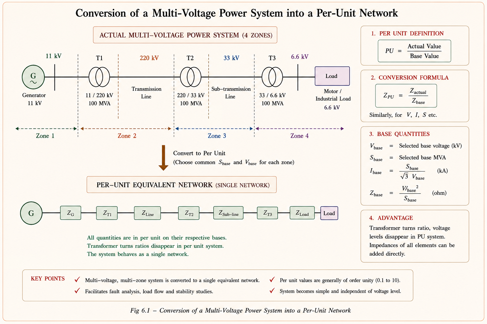
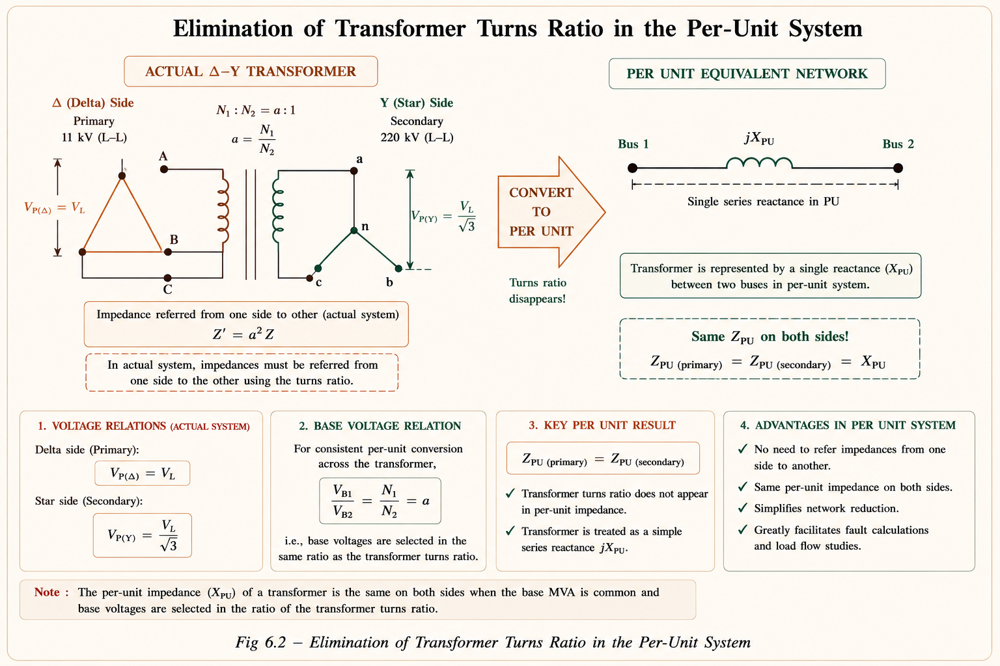
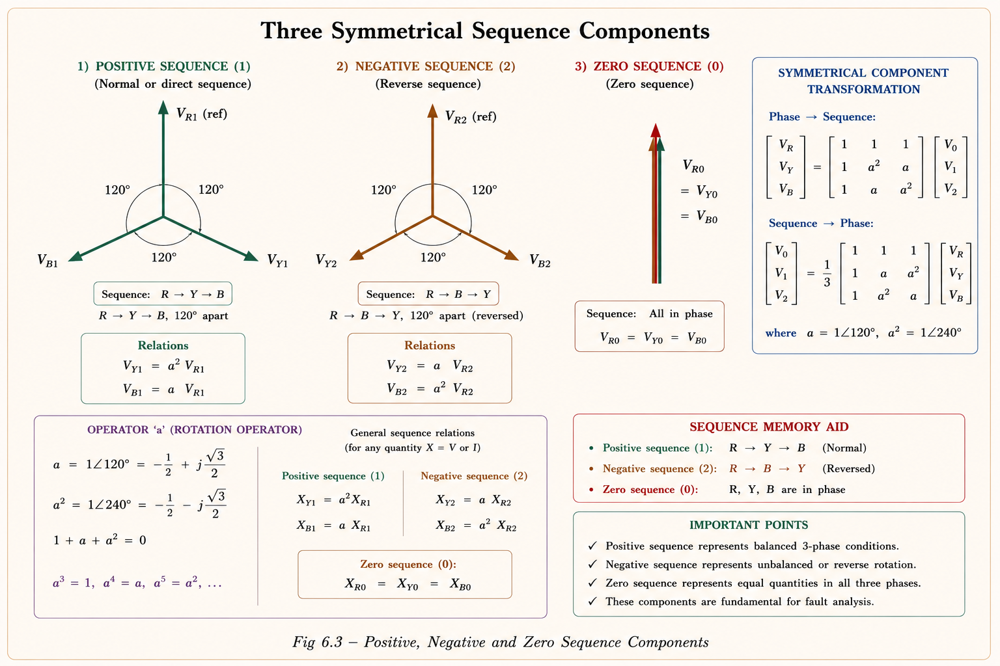
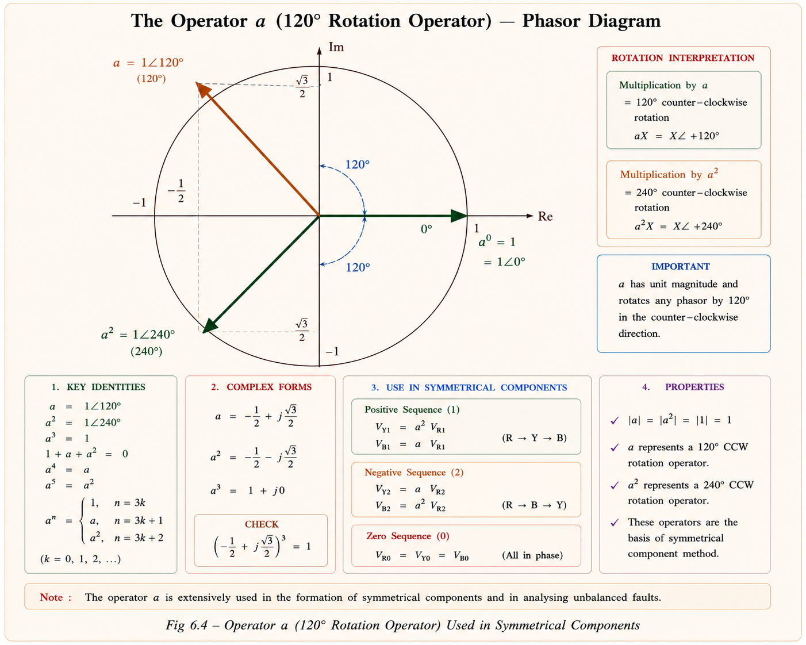
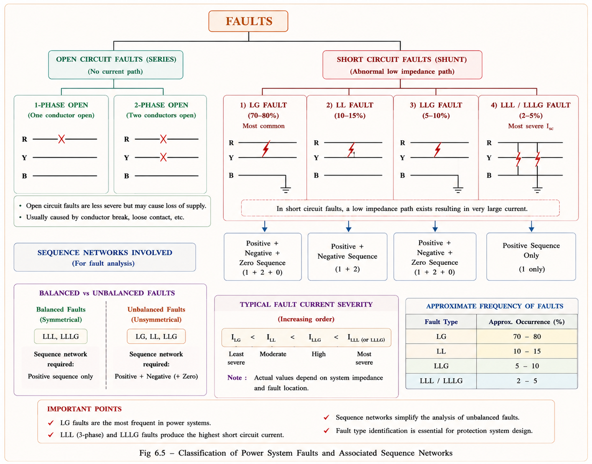
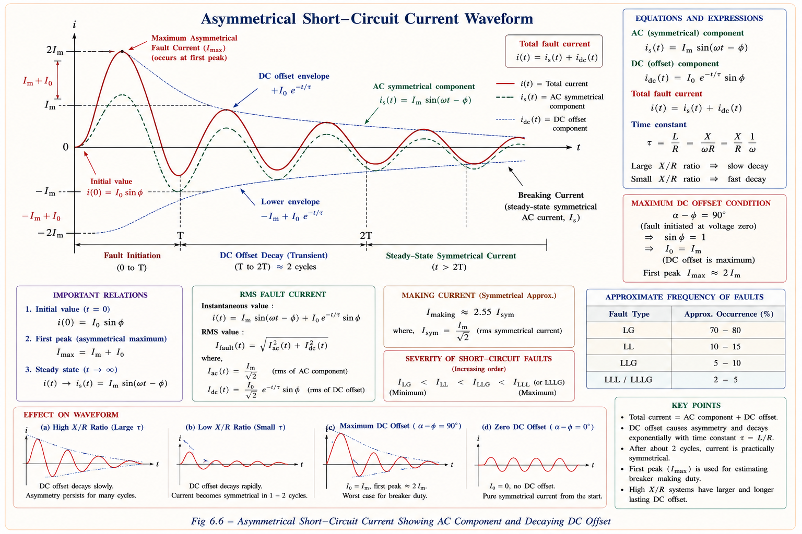
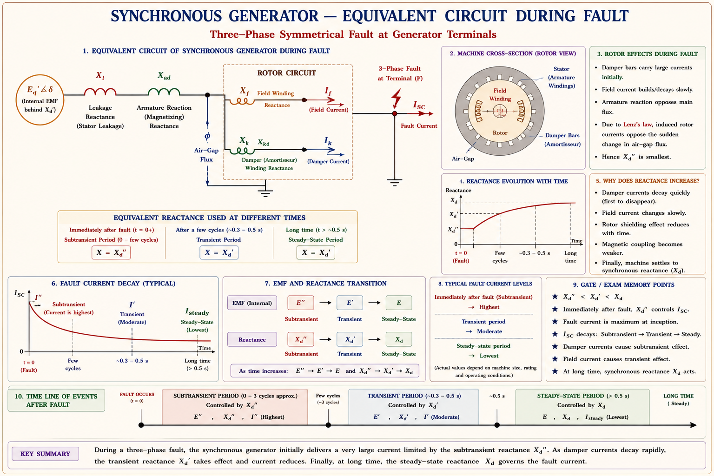
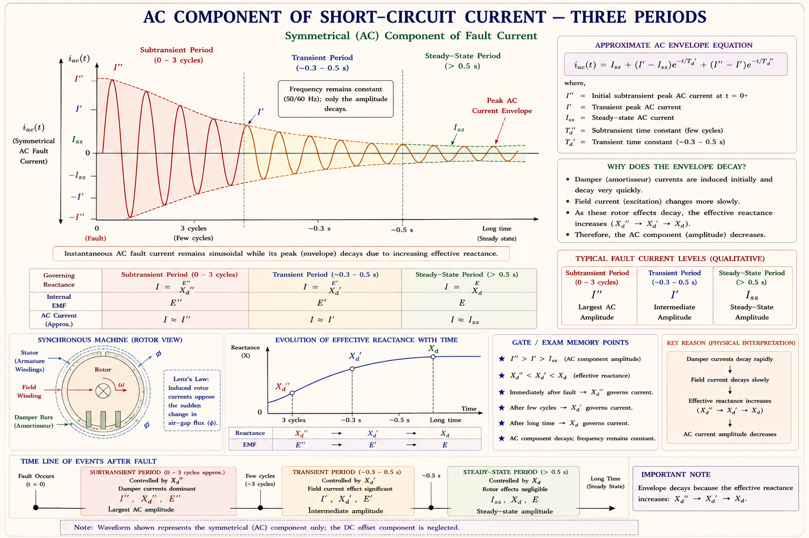

Per-unit normalisation, electrical simulation networks, symmetrical components, the operator K, classification of faults, short-circuit current behaviour, and sub-transient/transient/steady-state reactances — complete GATE, IES and PSU coverage with derivations, solved examples, and previous-year questions.
A real power system has generators at 11 kV, step-up transformers to 220 kV, long EHV lines, step-down transformers to 33 kV, and finally distribution at 6.6 kV — all in one single-line diagram. Analysing this with actual ohms and amps requires four separate networks, one per voltage zone. The per-unit (PU) system collapses all of these into a single unified network.
In electrical engineering, quantities like voltage, current, impedance, and power can be expressed in two ways: in their actual units (volts, amperes, ohms, watts) or as dimensionless per-unit (PU) values — ratios relative to a chosen base. This normalisation is the foundation of modern power system analysis.[1]

Fig 3.1 — Multi-voltage actual system (4 zones) collapses to one unified network in the PU system.
A per-unit value is the ratio of the actual quantity to a chosen base quantity in the same unit. The base is always optional — you choose it for convenience.
A PU value can be <1.0, >1.0, or exactly 1.0. The magnitude depends entirely on which base you choose. In a per-unit system, only two base quantities are independent (usually Vbase and VAbase). All others — Ibase and Zbase — are derived.
For a 3-phase AC power system, ratings of equipment are specified in volts (V) and volt-amperes (VA). We freely choose Vbase and VAbase, then derive the rest:
Always use line voltage (kV) as Vbase when working with 3-phase systems. If given Vphase, convert to line first: \(V_{line} = \sqrt{3}\,V_{phase}\). Many students mix these up and get factors of 3 wrong.
In any PU system, the entire SLD is replaced by an electrical simulation network — impedance (or reactance) and admittance (or susceptance) networks drawn on a per-phase basis, assuming the 3-phase system is balanced with Y-configuration. Each machine and element has a specific equivalent:
| Equipment | SLD Symbol | PU Equivalent | Remark |
|---|---|---|---|
| Synchronous Generator | Circle with # | Voltage source E∠δ in series with XPU | R≪X; Z≈jX; rotor flux leads stator flux by δ |
| Transformer | Two coupled coils (YY or ΔY) | Series reactance XPU — ideal element, no turns ratio | PU Z same on primary & secondary |
| Transmission Line | Horizontal bar | Series impedance ZPU (or XPU) | R+jX in PU; shunt elements added for medium/long line |
| Synchronous Motor | Circle with # and arrow | Voltage source E∠δ in series with λPU | Back-EMF; absorbs real power |
| Induction Motor | Rectangle with down arrow | Series X + rotor r'PU/s | Slip s appears in equivalent circuit |
Table 3.1 — Electrical simulation network elements. All impedances expressed in PU. Source: Stevenson [1], Kothari & Nagrath [2].
On the primary: \(Z_{PPU} = Z_{P\Omega}/Z_{b,primary}\). On the secondary: \(Z_{SPU} = Z_{S\Omega}/Z_{b,secondary}\). Since \(Z_{P\Omega} = k^2 Z_{S\Omega}\) (where k = turns ratio) and \(Z_{b,primary} = k^2\,Z_{b,secondary}\), the k² cancels perfectly — giving ZPPU = ZSPU. This is the single most important advantage of the PU system.
In an AC system the rating of equipment is given in voltage V and apparent power (VA or MVA). For large generators rated in MVA at kV:
This is the most frequently used formula in GATE and IES. Notice the units: if Z is in ohms, MVAb in MVA, and kVb in kV, the result is dimensionless per-unit.
Equipment datasheets give PU impedance on the equipment's own nameplate base (old base). When adding to a system study, we must convert to the system base (new base). The conversion formula is:
MVA ratio is new/old · KV ratio is old/new (squared). Think: "MVA you want to be new, kV you want to be old." Write it as: \( Z_{new} = Z_{old} \times \left(\frac{MVA_{new}}{MVA_{old}}\right) \times \left(\frac{kV_{old}}{kV_{new}}\right)^2 \)
When converting a Δ-connected winding to its 1-φ Y-equivalent for PU analysis, the phase voltage is taken as VL/√3 (the Y equivalent). The PU reactance, however, remains identical on both sides — regardless of whether the winding is Δ or Y. This is a powerful feature: the simulation network always looks like a Y-connected circuit.

Fig 3.2 — The Δ–Y transformer is reduced to a single series reactance XPU in the per-unit simulation network. Turns ratio disappears.
Using the base-change formula (Equation 2):
The new system base is much larger (250 vs 100 MVA) so the reactance in PU should be larger — it is (2.083 > 1.2). Also the system voltage is higher (13.2 > 11 kV), which reduces PU reactance — but the MVA increase dominates here. Always do a rough sanity check.
Under balanced conditions, only one phase needs analysis (all three are symmetric). But faults — like a line-to-ground short circuit — create unbalanced voltages and currents. Fortescue's theorem (1918) proves that any set of N unbalanced phasors can be decomposed into N sets of balanced phasors. For 3-phase systems, three unbalanced phasors decompose into three balanced sequence sets.
Any unbalanced 3-phase voltage or current (VR, VY, VB) can be expressed as the sum of three sets of balanced symmetrical components:
| Sequence | Name | Phase Order | Characteristics | GATE Importance |
|---|---|---|---|---|
| 1 (Positive) | Positive Sequence | R → Y → B (normal RYB) | Equal magnitudes, 120° apart, same rotation as normal system | Very High |
| 2 (Negative) | Negative Sequence | R → B → Y (reversed) | Equal magnitudes, 120° apart, opposite rotation | High |
| 0 (Zero) | Zero Sequence | All in phase | Equal magnitudes, 0° apart — all three phases same phasor | Very High |

Fig 3.3 — The three symmetrical sequence components. Positive sequence is normal balanced, negative is reversed, zero has all three in phase.
Although voltage and current can be decomposed into symmetrical components, power cannot be directly expressed using them in the same way. Power calculations must always remain in the original 3-phase domain. This is because power is a product (V × I) and cross-sequence products don't cancel in the power expression.
To reduce the nine symmetrical components (3 phases × 3 sequences) to just three unknowns (the R-phase components of each sequence), we use a unit phasor operator K — defined as unity magnitude with 120° anti-clockwise phase displacement.
Using K, the Y-phase and B-phase components of each sequence can be written in terms of the R-phase components:
In matrix form (the A-matrix or Fortescue matrix):
The zero sequence component VR0 = (VR + VY + VB)/3. For a perfectly balanced system, the phasors sum to zero → VR0 = 0. Zero sequence components only exist when there is a ground path (neutral connection). This is why zero sequence current flows only in circuits with a neutral or ground connection.

Fig 3.4 — K = 1∠120° rotates a phasor by 120° anti-clockwise. K², K³ are 240° and 360° rotations.
The occurrence of a fault in a 3-phase system causes the system to become unbalanced. Faults are broadly classified into two categories:

Fig 3.5 — Complete fault classification tree. LG faults are most frequent; LLL/LLLG produce the highest fault current.
| Fault Type | Abbreviation | % Occurrence | ISC Severity | Balanced? | Sequences Involved |
|---|---|---|---|---|---|
| Line to Ground | LG | ~70% | Less severe | No | +ve, −ve, zero |
| Line to Line | LL | ~15% | Moderate | No | +ve, −ve only |
| Line to Line to Ground | LLG | ~10% | Moderate-severe | No | +ve, −ve, zero |
| Three Phase (Line to Line to Line) | LLL | ~5% | Most severe | Yes | +ve only |
| Three Phase to Ground | LLLG | ~5% | Most severe | Yes | +ve only |
Table 3.2 — Fault types, percentage occurrence, and severity. Source: Stevenson [1], IIT-KGP NPTEL [5].
Students often confuse "most common" with "most severe." LG is the most common fault (70%) — it occurs most frequently because insulation failure and tree branches are common single-phase events. But LLL/LLLG produces the highest fault current — because all three phases contribute simultaneously with no zero-sequence path to limit current. These are opposite facts and GATE explicitly tests this.
Consider a transmission line supplied by a synchronous generator, operating at steady state with balanced load. At t = 0, a three-phase short circuit occurs. The capacitance is assumed shorted. The circuit reduces to a series R–L network driven by a sinusoidal source:
The complete solution consists of two components:

Fig 3.6 — Total fault current i = i_s (AC component) + i_t (DC offset). The asymmetry is maximum when α−φ = 90° (maximum DC offset condition).
An inductor does not allow sudden changes in current. At t = 0⁻ (just before fault), the current in the inductor is zero (no load, or we calculate from pre-fault). At t = 0⁺, the AC source tries to instantly drive a large current — but the inductor forces continuity. The DC offset is exactly the "correction" term needed to ensure i(0⁺) = i(0⁻). Once established, it decays with time constant τ = L/R.
When the DC offset is zero (symmetrical fault, no transient), the short-circuit current is purely sinusoidal and can be expressed as an RMS value. This is called the symmetrical short-circuit current:
When a short-circuit occurs at the terminals of a synchronous generator, the AC component of fault current is not constant — it starts very large and decays in three distinct stages. This is because the effective reactance seen by the fault changes with time due to armature reaction and flux linkage changes.
The short-circuit current at generator terminals is purely inductive. The stator flux ϕs (rotating) demagnetises the rotor air-gap flux through armature reaction. To maintain air-gap flux, the rotor field winding and damper winding provide counter-EMF. As damper winding currents die out, then field current changes, the effective reactance increases in stages.

Fig 3.7 — Generator equivalent during sub-transient period: damper winding (Xdamp), field winding (Xf), armature reactance (Xa), and leakage (Xl) all appear in parallel.
$$X_d'' < X_d' < X_d$$
Sub-transient reactance is smallest → sub-transient current is the largest. This is the current that determines the rating of circuit breakers (interrupting capacity) and the peak mechanical stress on generator windings.

Fig 3.8 — The AC component of fault current decays from sub-transient peak I″ to transient I′ to steady-state ISS as reactance increases.
| Period | Duration | Reactance Used | Current | Application |
|---|---|---|---|---|
| Sub-transient | 0 – 1 cycle (~0.05 s) | \(X''_d\) (smallest) | I″ (largest) | CB interrupting & making capacity, mechanical stress design |
| Transient | 2 – 5 cycles | \(X'_d\) | I′ | CB timing; relay coordination; stability studies |
| Steady-State | > 30 cycles | \(X_d\) (largest) | ISS (smallest) | Thermal rating of equipment; long-term protection |
The maximum possible instantaneous current is exactly twice the peak steady-state current. This occurs when the fault inception angle satisfies α − φ = 90°. This 2× factor is used in circuit breaker making capacity calculations.
Using K = 1∠120°:
Similarly compute VR1 and VR2 using the inverse transformation formulas. (This is the standard procedure; complete numerical substitution yields the three sequence voltages.)
A generator rated 200 MVA, 20 kV has a reactance of 0.15 PU on its own base. The system base is 100 MVA, 22 kV. The reactance of the generator in per unit on the system base is:
\(X_{new} = 0.15 \times \frac{100}{200} \times \left(\frac{20}{22}\right)^2 = 0.15 \times 0.5 \times 0.826 = 0.0620\text{ PU}\)
In a short-circuit fault on a transmission line, the DC offset in the fault current depends on:
DC offset magnitude k = −(√2·V/Z)·sin(α−φ). It depends on both the fault inception angle α and the circuit impedance angle φ = tan⁻¹(X/R). Maximum when α−φ = 90°, zero when α = φ.
The sub-transient reactance \(X''_d\) of a synchronous generator is used for calculating:
\(X''_d\) (smallest reactance) gives the largest initial fault current. This is used to size circuit breakers (interrupting & making capacity) and to determine peak mechanical stress on generator stator windings during the first cycle of the fault.
In a 3-phase balanced system, the zero sequence component of voltage is:
For a balanced system VR + VY + VB = 0, so VR0 = (VR+VY+VB)/3 = 0. Zero sequence components only appear under unbalanced conditions (faults, unsymmetrical loading).
Which of the following statements is correct regarding faults in a 3-phase power system?
| Topic | GATE Freq. | IES Freq. | Type of Questions |
|---|---|---|---|
| Base change formula — Eq.(2) | Every year | Very common | 1-mark numerical |
| K operator powers & identities | Almost every year | Very common | MCQ + 2-mark |
| Fault type — occurrence vs severity | Alternate years | Very common | MCQ conceptual |
| DC offset condition (max/zero) | Every 2–3 years | Occasional | 2-mark numerical |
| \(X''_d\) / \(X'_d\) / \(X_d\) — application | Every year | Very common | MCQ + conceptual |
| Zero sequence — existence condition | Alternate years | Common | MCQ conceptual |
PU = Actual/Base. Choose Vb & VAb freely. Derive Ib = VAb/(√3 Vb), Zb = Vb²/VAb. ZPU = ZΩ·MVAb/(kVb)². Transformer PU-Z same on both sides.
Znew = Zold × (MVAnew/MVAold) × (kVold/kVnew)². MVA ratio = new/old. kV ratio = old/new. Memorise: MNVO.
VR = VR1+VR2+VR0. VY = K²V1+KV2+V0. VB = KV1+K²V2+V0. Inverse: VR1=(VR+KVY+K²VB)/3.
K = 1∠120°. K² = 1∠240° = −0.5−j0.867. K³ = 1. 1+K+K² = 0. K⁴=K, K⁵=K², K⁶=1. Zero sequence exists only with neutral/ground path.
LG: 70% (most common), less severe. LL: 15%. LLG: 10%. LLL: 5% (least common), most severe ISC. Open circuit: 3-phase open = no fault (no load).
i = is + it. DC offset k = −(√2V/Z)sin(α−φ). Zero DC: α=φ. Max DC: α−φ=90°. Peak max = 2× peak symmetric. ISC = V/Z (RMS, symmetric).
\(X''_d < X'_d < X_d\). Sub-transient: 1st cycle, largest I. Transient: 2–5 cycles. Steady-state: >30 cycles, smallest I. \(X''_d\) used for CB rating; \(X_d\) for steady-state analysis.
Generator → V source + XPU. Transformer → single XPU (no turns ratio). Line → ZPU. Motor → V source + XPU. All in Y, per-phase, at PU values.
LG ≠ most severe (it's most common). Max DC ≠ 2×RMS (it's 2×peak = 2√2×RMS). PU transformer Z = same on both sides (not different). Use kV_line (not phase) in formulas.
Ask any question about per-unit system, symmetrical components, fault analysis, DC offset, or generator reactances. Try the suggested questions below.
All technical content is derived from the following standard textbooks and learning resources. All explanations, derivations, diagrams, and examples are original to Aarova AI.